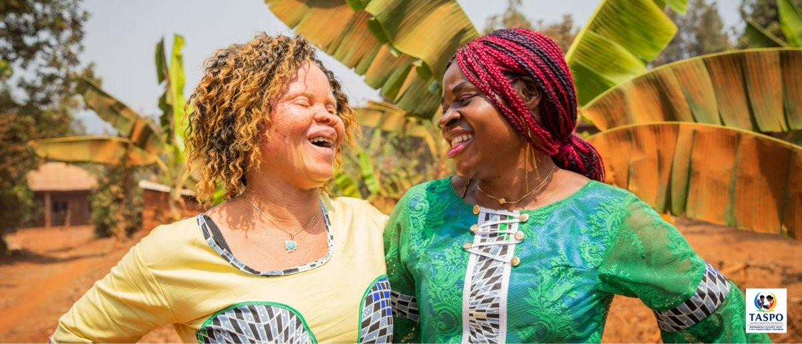

Albinism in Tanzania: A History of Suffering, Resilience and Hope
The real story of albinism in Tanzania — the discrimination, the danger, and the everyday impact on health and life, and how change is happening.
Read article →Albinism is a genetic condition — nothing more, nothing less. Yet in Tanzania, generations of superstition and misunderstanding have turned a simple difference in pigmentation into a source of fear, exclusion and, for far too many families, danger. At TASPO, we believe the most powerful tool against that fear is knowledge, shared consistently, in the places where beliefs are actually formed: classrooms and communities.

Children absorb the attitudes around them long before they can question them. That's why our awareness work starts early, running sessions directly in schools that explain what albinism actually is — a genetic condition, not a curse, not a punishment, and not something to fear. We help teachers and students understand the real challenges their peers with albinism face, like sun sensitivity and low vision, so that support replaces exclusion, and curiosity replaces stigma.
Myths about albinism don't disappear on their own — they have to be actively and respectfully challenged. TASPO works within local communities to open honest conversations about where these beliefs come from and why they don't hold up, using trusted local voices to help messages land. It's slow, patient work, but it's how real change happens: one classroom, one village meeting, one conversation at a time.
Every myth we help dismantle makes it a little safer for a child with albinism to walk to school, play outside, and grow up without hiding who they are. Education won't undo generations of harm overnight, but it's the foundation everything else — safety, dignity, opportunity — is built on.
Our albinism work is coordinated by Zainab Ham Abdul, TASPO's Coordinator for People with Albinism, who connects our programmes with people with albinism and their families.

The real story of albinism in Tanzania — the discrimination, the danger, and the everyday impact on health and life, and how change is happening.
Read article →
How attitudes toward people with albinism in Tanzania have shifted across generations — from ancient folklore to today's advocacy movement.
Read article →
Why teachers with albinism are hit hardest by chalk and blackboards, and how swapping to whiteboards removes one of their biggest daily obstacles.
Read article →Whether you give, partner, donate equipment or simply share our story, you help Tanzanian students learn in better conditions.